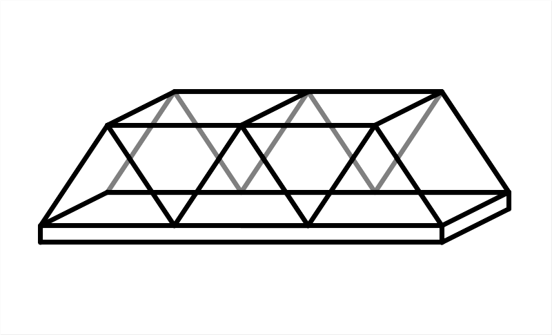
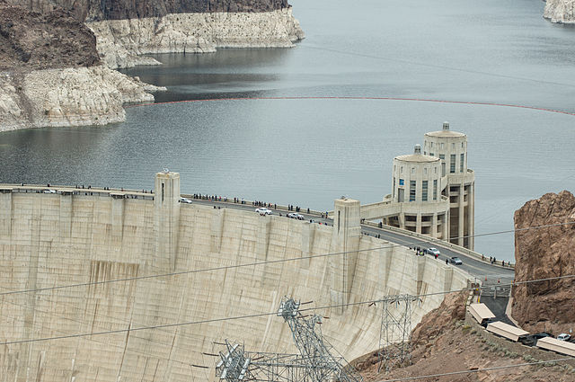
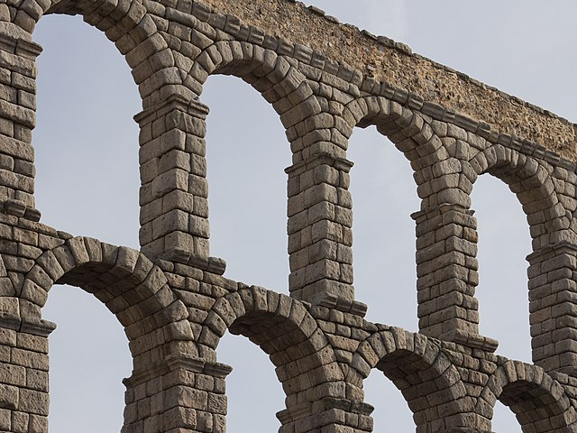
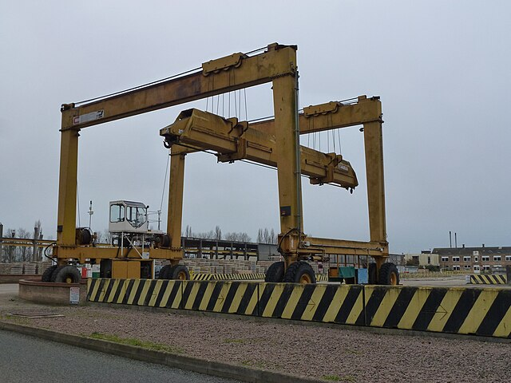
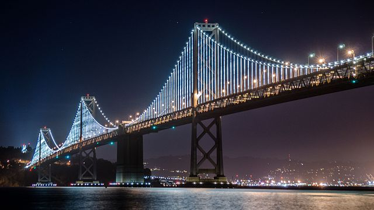
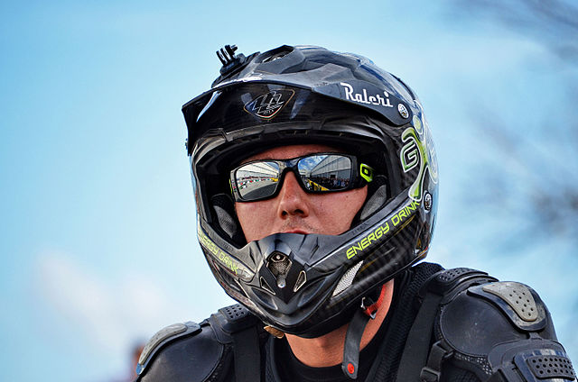

Introducció a les estructures¶
{kind=link}

- estructura
- És un conjunt d’elements destinats a donar suport als esforços sense trencar -se ni deformar -se.
A la naturalesa ** ** hi ha moltes estructures del tronc que manté un arbre al nostre esquelet. Tots ells donen suport als esforços per superar la gravetat i en el cas dels esquelets també permeten el moviment.
En l’àmbit tècnic ** ** La construcció d’estructures per fabricar cases, vaixells o vaixells és tan antiga com la civilització mateixa. Avui les estructures poden ser molt complexes i permetre construir edificis, cotxes, avions, ponts, torres d’alta tensió, preses i dispositius interminables sense els quals el món actual, tal com el coneixem, no existiria.
Origen de les estructures¶
Les estructures es poden diferenciar segons el seu origen:
| ** Natural ** | Un tronc d’arbre. Shell Turtle. Esquelet humà Closques de mol·lusc. Niu d'ocells. |
| ** Artificial ** | Pont de suspensió. Estructura d’un edifici. Habitatge informàtic. Grua de treball. Paret. |
Classificació d’estructures¶
Segons els seus elements, podem classificar les estructures dels grups següents:
- Massiva
Format per una gran massa de material amb gairebé cap buit.
Exemples: presa d’aigua. Piràmide. Parets

Presa d’aigua de Hoover.¶
Adam Kliczek, CC BY-SA 3.0 International, vía Wikimedia Commons.- Vaid
Format per arcs i voltes.
Exemples: sostre de la catedral gòtica. Pont romà. Aqüeducte. Panteó de Roma.

Arcs de l'aqüeducte de Segòvia.¶
Carlos Delgado, CC BY-SA 3.0 International, vía Wikimedia Commons.- Triangulat
Format per barres unides entre si en triangles.
Exemples: grua de treball. Torre Eiffel. Torre d’alta tensió.
- Fotogrames
Format per elements verticals i horitzontals.
Exemples: Estructura de l’edifici. Cadires i taules. Escala.

Grua en forma de pòrtic.¶
Richard Humphrey, CC BY-SA 2.0 International, vía Wikimedia Commons.- Penjolls
Format per cables que admeten les càrregues.
Exemples: telefèric. Pont attirant o pont de pupple. Grua de treball. Tirolina

Pont de suspensió de San Francisco.¶
Mikebhuang, CC BY-SA 4.0 International, vía Wikimedia Commons.- Laminaris
Format per una làmina o paret fina.
Exemples: Bowl. Shell Turtle. Casc de moto. Dipòsit d’aigua.

Casc per a motorista.¶
Stefania Anghelea, CC BY-SA 4.0 International, vía Wikimedia Commons.
{kind=link}
{kind=link}
{kind=link}
{kind=link}
{kind=link}
{kind=link}
Moviment en estructures¶
La majoria de les estructures es construeixen perquè no es puguin moure. Tot i això, algunes estructures han de permetre que el moviment funcioni correctament. Aquestes estructures continuaran resistint els esforços i el seu propi pes sense trencar -se, però permetran el moviment de qualsevol de les seves parts.
- Estructures mòbils
Es poden moure o s’articulen. Suporten càrregues mentre permeten el moviment.
Exemples: porta amb frontissa. Drawbridge. Cadira de rodes. Grua.
- Estructures fixes
No es mouen ni es mouen.
Exemples: Bridge. Edifici. Torre d’alta tensió. Bol.
Exercicis¶
Enumereu quatre estructures artificials naturals i cinc.
Enumereu quatre estructures massives.
Enumereu quatre estructures de volta.
Enumereu quatre estructures triangulades
Enumereu quatre estructures marc
Enumereu quatre estructures penjants
Enumereu quatre estructures laminades
Indica les diferències entre estructures triangulades i marc
Classifiqueu les estructures següents:
- Aqüeducte
- Closca de tortugues
- Habitatge informàtic
- Casc
- Closques de mol·lusc
- Tassa
- Esquelet humà
- Estructura de l'edifici
- Grua de treball
- Esglèsia
- Taula
- Mur de la Xina.
- Piràmide.
- Presa d’aigua
- Pont atirant.
- Pont de suspensió.
- Pont romà
- Cadira
- Telefèric
- Torre d'alta tensió
- Torre Eiffel
- Tronc de l'arbre
Indica quin tipus d’estructura es refereix a cadascuna de les frases següents:
- Format per cables que admeten les càrregues.
- Format per elements verticals i horitzontals.
- Format per arcs i voltes.
- Format per una gran massa de material amb gairebé cap buit.
- Format per una làmina o paret fina.
- Format per barres unides entre si en triangles.